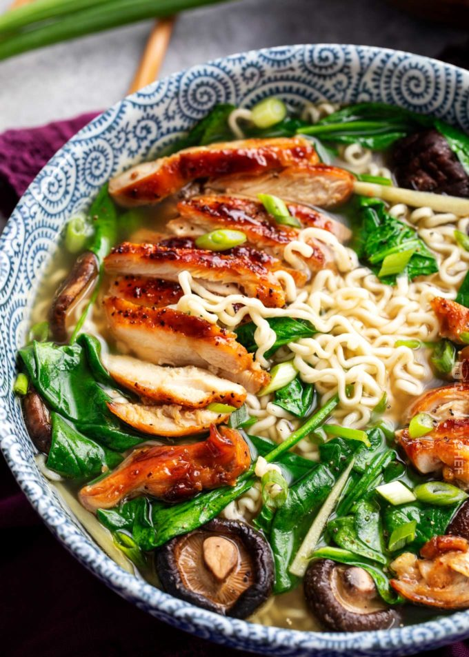
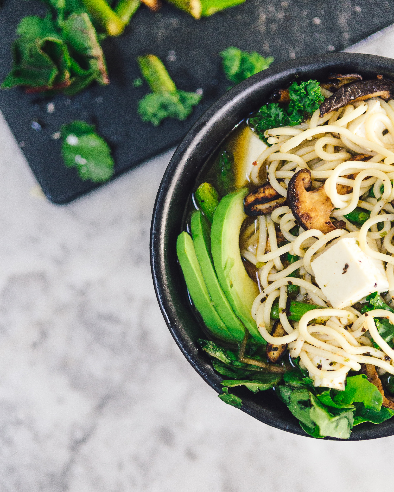

Homemade Spicy Shoyu Ramen Top with soft boiled egg, fish cake, nori and fall-apart tender chashu, this delicious bowl of spicy delight will sure satisfy your ramen craving!

Tonkotsu Veggie Ramen Vegetarian friendly. Tomato paste, dried shiitake mushrooms, kombu, and a little bit of butter help to get you that rich umami flavor.

Ginger Glazed Chicken Ramen Savory and sweet chicken thighs are glazed and added to a rich broth with shiitake mushrooms, spinach, and classic ramen noodles!